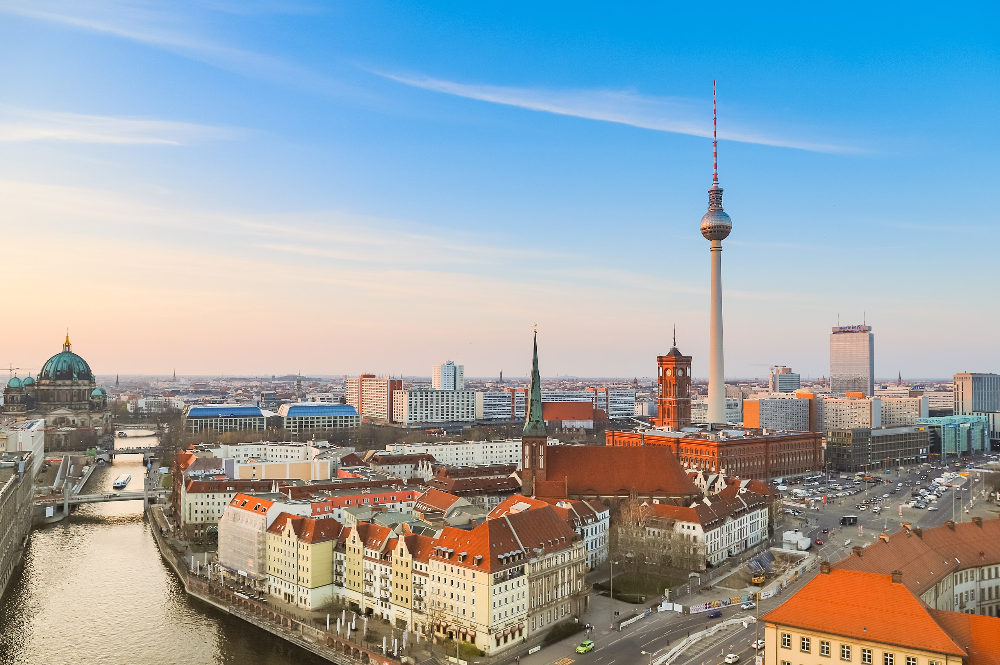

Berlin (/bɜːrˈlɪn/, German: [bɛʁˈliːn] (About this soundlisten)) is the capital and largest city of Germany by both area and population.[5][6] Its 3,748,148 (2018)[2] inhabitants make it the second most populous city proper of the European Union after London.[citation needed] The city is one of Germany's 16 federal states. It is surrounded by the state of Brandenburg, and contiguous with Potsdam, Brandenburg's capital. The two cities are at the center of the Berlin-Brandenburg capital region, which is, with about six million inhabitants and an area of more than 30,000 km²,[7] Germany's third-largest metropolitan region after the Rhine-Ruhr and Rhine-Main regions.
